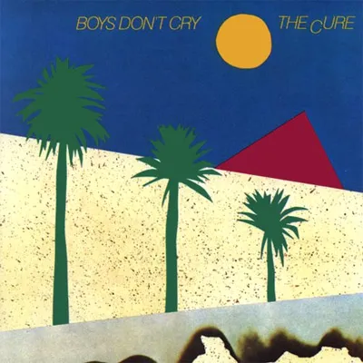

Boys Don't Cry
The Cure
This is by far one of my most favorite songs ever. You can just keep this song on loop and it's perfect BUT I will say the 1979 song is VERY much better than the 1986 remix that they keep trying to push out. I love obviously the main line "Hiding the tears in my eyes, 'cause boys don't cry" but SPECIFICALLY the first time he says it because he says it so mechanically but with so much passion that whenever I listen to it I always get into my feelings.